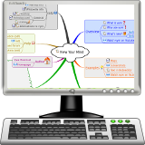

<div class="header"><h1 class="title">Organise Your Thoughts</h1></div>

<div class="main">

<div class="content"><ul>
	<li><em>Vym</em> is a powerful mindmapping tool that is included in Edubuntu.</li>
	<li>Summarize and organise plenty of information.</li>
	<li>Make subsections stand out with cloud bubbles and custom colours.</li>
	<li>Organize your goals, future plans, events and more.</li>
</ul></div>

</div>


